Tutorial: Decision trees, CPA/CPM, and Gantt practice
spreadsheet tutorial, Google Sheets, LibreOffice Calc, expected value, critical path, Gantt chart, decision note
Tutorial Decision trees, CPA/CPM, and Gantt practice
Acquisition
1 Tutorial briefing
⏱ 10 min
Review the chapter’s four files and set up the spreadsheet tasks for probability, decision trees, CPM and Gantt work.
Investigation
2 Decision tree task
⏱ 35 min
Use Week3_Decision_Tree_Data.csv to calculate expected values and compare the options in a simple decision tree.
Production
3 CPA/CPM and Gantt task
⏱ 40 min
Use Week3_CPM_Task_Data.csv and Week3_Gantt_Data.csv to identify task order, likely bottlenecks and the critical path.
Production
4 Decision note
⏱ 25 min
Write a short note that explains which option or schedule deserves management attention, and why.
Assessment
5 Share and upload
⏱ 10 min
Compare your spreadsheet with a classmate and upload the final workbook and note.
Have the chapter text available during this session. This session builds the spreadsheet and assumes you have read all four pages and completed the Try It exercises. Have a calculator available. Steps 4 and 9 require you to verify the spreadsheet outputs against your manual calculations.
Every step below includes a Google Sheets tab and a LibreOffice Calc tab. Select the program you are using and remain on that tab. LibreOffice is free to install on Windows, macOS and Linux from libreoffice.org. The formulas are the same in both, apart from one cross-sheet reference in step 12, so the step numbers, the outputs and the answers match either way.
The tools in this chapter involve arithmetic on small tables. JASP and PocketStat lack functions for expected value, the critical path and Gantt charts. The reference page shows how JASP and PocketStat can confirm the probability counts in step 3.
Activity 1: Tutorial briefing (10 minutes)
You will build one workbook with four sheets, one for each file, and add columns of formulas to three of them. By the end of the session, the workbook will contain all the figures required for your decision note.
Step 1. Import the four files into one workbook
Create a blank spreadsheet and name it Chapter 3 workbook. Choose File, then Import, then Upload and pick Week3_Probability_Basics_Data.csv. Set Import location to Insert new sheet(s) and click Import data. Repeat for Week3_Decision_Tree_Data.csv, Week3_CPM_Task_Data.csv and Week3_Gantt_Data.csv. Delete the empty Sheet1.
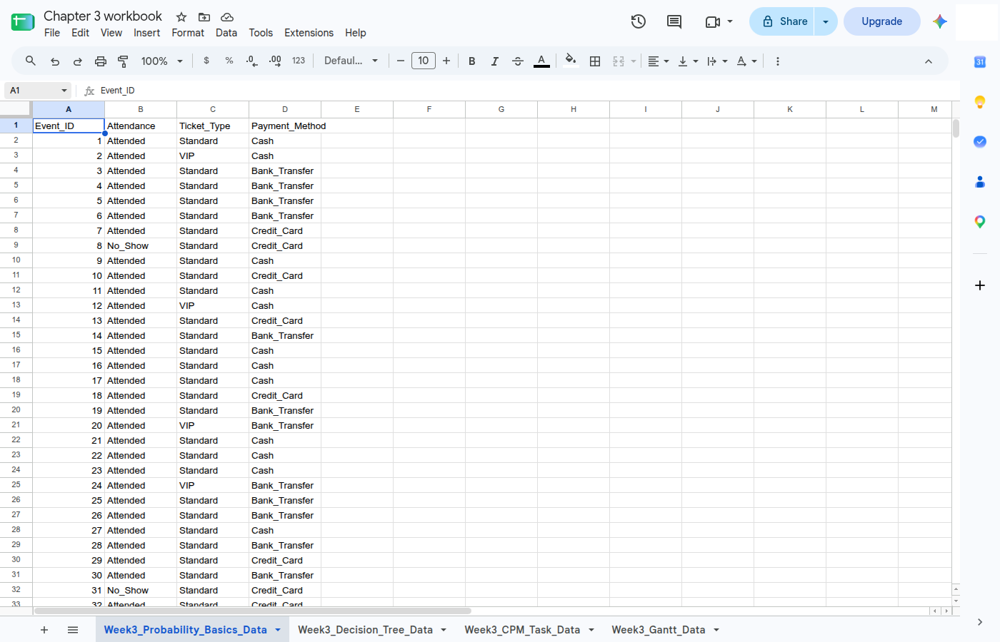
Open Week3_Probability_Basics_Data.csv in LibreOffice Calc. In the Text Import dialogue, tick Comma under Separator Options and click OK. To add each of the other three files as a sheet of its own, choose Sheet, then Insert Sheet from File, pick the file, accept the Text Import settings and click OK in the Insert Sheet dialogue. Save the workbook as Chapter 3 workbook with File type set to ODF Spreadsheet (.ods), because a CSV file supports only one sheet and would lose the other three.
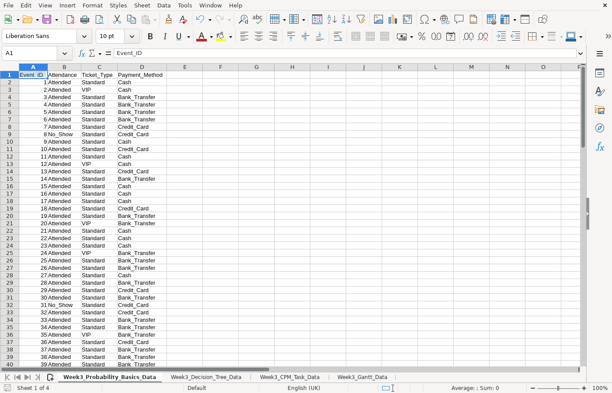
Step 2. Check each sheet
Open each sheet and scroll to its last row. The probability and decision tree sheets end at row 101, and the CPM and Gantt sheets at row 9. Row 1 holds the column names in every sheet, so the data start in row 2. Check that no column name has been split across two columns.
Open each sheet and press Ctrl and the down arrow to jump to the last row. The probability and decision tree sheets end at row 101, and the CPM and Gantt sheets at row 9. Row 1 holds the column names in every sheet, so the data start in row 2.
Step 3. Build the attendance table
On the probability sheet, click cell F1 and type the labels and formulas below, one per cell, working down columns F and G.
| Cell | Type | Result |
|---|---|---|
| F2 | Attended |
|
| G2 | =COUNTIF(B2:B101, "Attended") |
83 |
| F3 | P(Attended) |
|
| G3 | =G2 / COUNTA(B2:B101) |
0.83 |
| F4 | Cash and attended |
|
| G4 | =COUNTIFS(D2:D101, "Cash", B2:B101, "Attended") |
23 |
| F5 | P(Attended given Cash) |
|
| G5 | =G4 / COUNTIF(D2:D101, "Cash") |
0.7667 |
Format G3 and G5 to show four decimal places, using Format, then Number, then Custom number format and 0.0000.
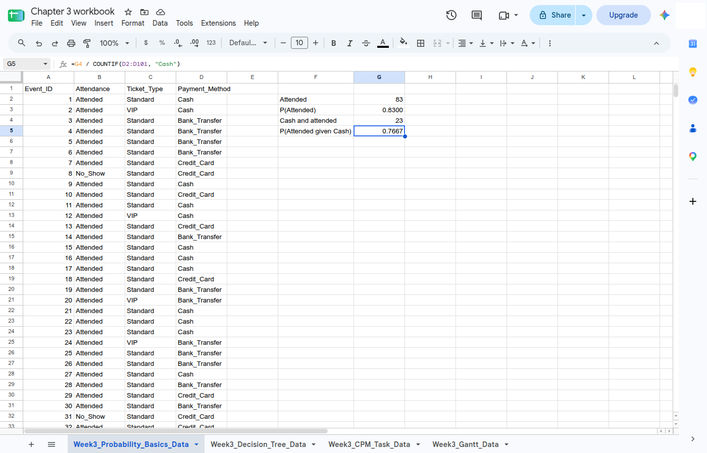
On the probability sheet, click cell F1 and type the labels and formulas in Table 3.26, one per cell, working down columns F and G. The formulas are the same as in Google Sheets.
Format G3 and G5 to show four decimal places: select them, choose Format, then Cells, open the Numbers tab and set Decimal places to 4.
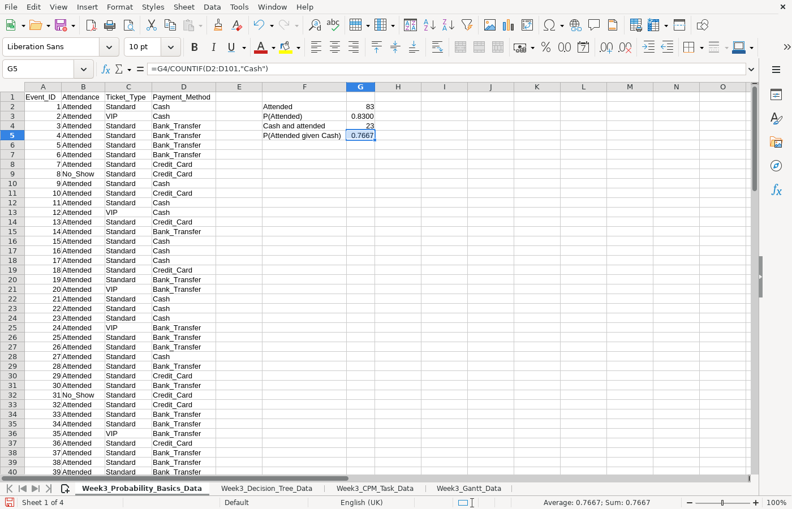
The results match worked examples 3.1 and 3.3. If G2 returns 0, check the spelling of "Attended" and confirm that the range references column B.
Activity 2: Decision tree task (35 minutes)
This activity uses the decision tree sheet: Group_ID in column A, Option in B, Probability_Success in C, Probability_Failure in D, Payoff_Success in E and Payoff_Failure in F.
Step 4. Add the expected value
Type Expected_Value in G1. In G2 type =C2*E2 + D2*F2 and press Enter. Click G2, then double-click the small square at its bottom-right corner to fill the formula down to row 101. Format columns C and D to three decimal places and column G to two, using Format, then Number, then Custom number format, with 0.000 and 0.00. The probabilities in the file run to 16 decimal places, and formatting changes only what is shown.
Row 2 contains scenario 1 for the local vendor. Verify that G2 displays 4663.15. Scroll to row 52, which contains scenario 1 for the international vendor, and verify 9123.24. Worked example 3.6 found 4,665.48 and 9,128.27 with probabilities rounded to three decimal places. The spreadsheet uses the exact probabilities, resulting in a difference of approximately 5 USD.
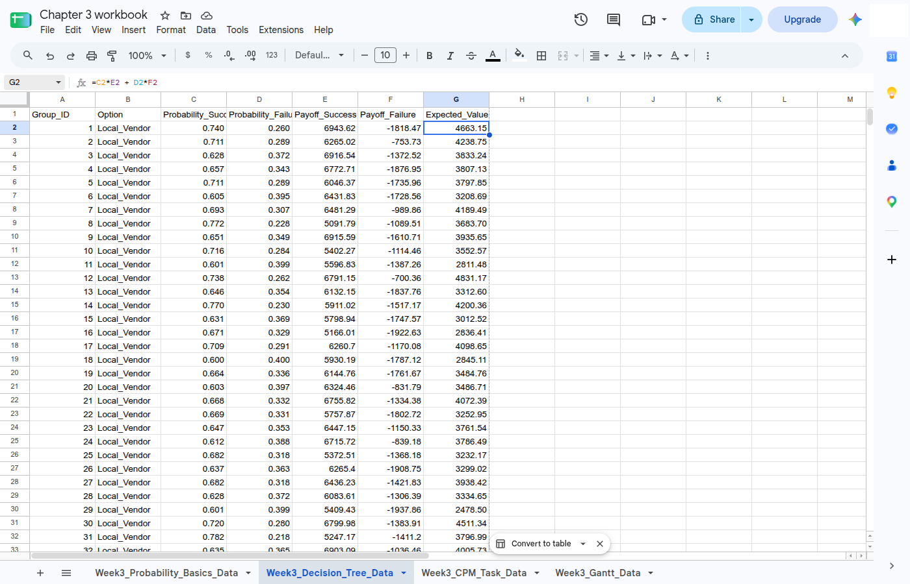
Type Expected_Value in G1. In G2 type =C2*E2 + D2*F2 and press Enter. Type G2:G101 into the Name Box at the top left and press Enter, then choose Sheet, then Fill Cells, then Fill Down.
Format columns C and D to three decimal places and column G to two, using Format, then Cells, then the Numbers tab. The probabilities in the file run to 16 decimal places, and formatting changes only what is shown.
Row 2 contains scenario 1 for the local vendor. Verify that G2 displays 4663.15. Scroll to row 52, which contains scenario 1 for the international vendor, and verify 9123.24. Worked example 3.6 found 4,665.48 and 9,128.27 with probabilities rounded to three decimal places. The spreadsheet uses the exact probabilities, resulting in a difference of approximately 5 USD.
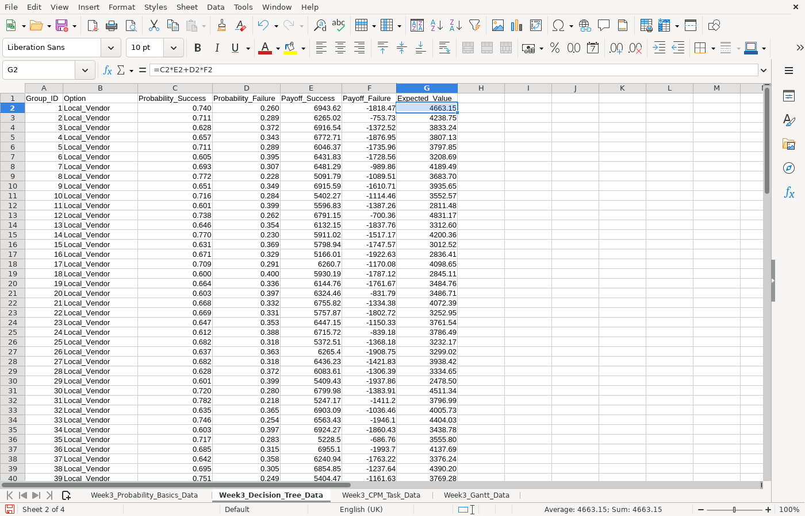
Step 5. Add the standard deviation of the payoff
Type SD_Payoff in H1 and =(E2 - F2) * SQRT(C2*D2) in H2, then fill down to row 101 and format column H to two decimal places. H2 should read 3844.62. The formula is the two-outcome shortcut from part 2. C2*D2 represents \(p(1 - p)\) because column D contains \(1 - p\).
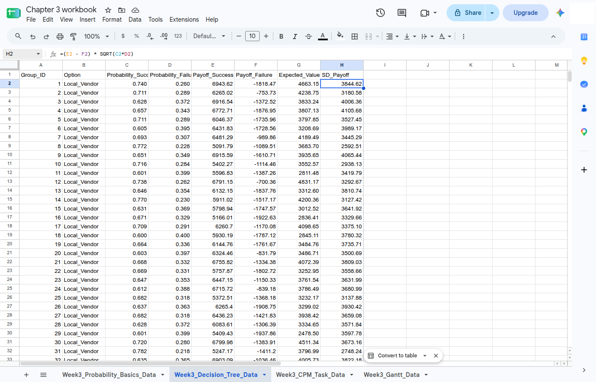
Type SD_Payoff in H1 and =(E2 - F2) * SQRT(C2*D2) in H2, then fill down to row 101 as in step 4 and format column H to two decimal places. H2 should read 3844.62. The formula is the two-outcome shortcut from part 2. C2*D2 represents \(p(1 - p)\) because column D contains \(1 - p\).
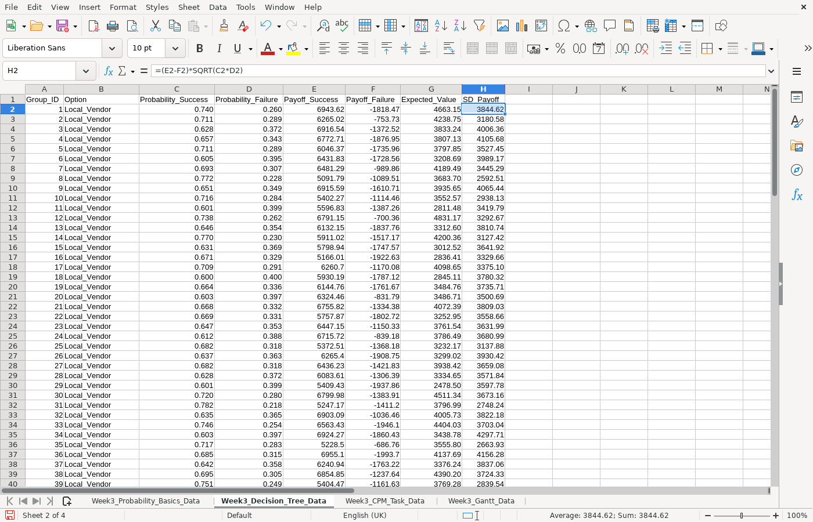
Step 6. Summarise the two options
In J1 type Local_Vendor and in K1 type International_Vendor. Then fill the cells below, using the formulas in Table 3.27. Each formula references the option name in row 1 of its own column. Type it once in column J and copy it across to column K.
| Row | Label in column I | Formula in J |
|---|---|---|
| 2 | Mean expected value | =AVERAGEIF($B$2:$B$101, J$1, $G$2:$G$101) |
| 3 | Mean P(late) | =AVERAGEIF($B$2:$B$101, J$1, $D$2:$D$101) |
| 4 | Largest loss | =MINIFS($F$2:$F$101, $B$2:$B$101, J$1) |
| 5 | Mean SD | =AVERAGEIF($B$2:$B$101, J$1, $H$2:$H$101) |
The dollar signs anchor the reference when the formula is copied. $B$2:$B$101 remains fixed on column B, while J$1 changes to K$1 when copied one column to the right.
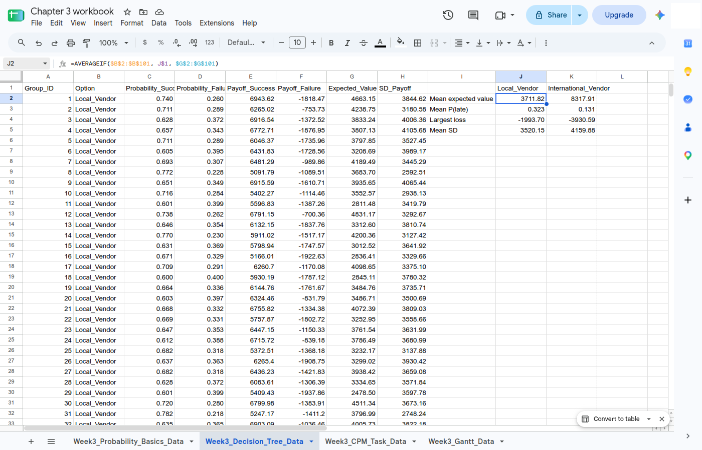
In J1 type Local_Vendor and in K1 type International_Vendor. Then fill the cells below with the formulas in Table 3.27, typing each once in column J and copying it across to K.
The dollar signs anchor the reference when the formula is copied. $B$2:$B$101 remains fixed on column B, while J$1 changes to K$1 when copied one column to the right.
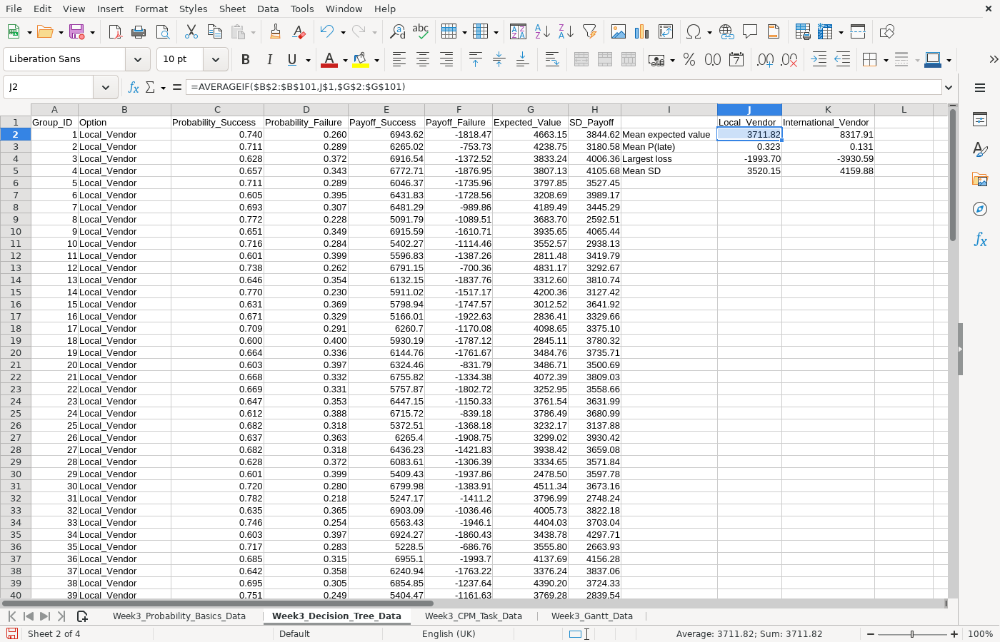
Compare your four rows with Table 3.15 in part 2. Record the eight figures for your decision note in step 13.
Step 7. Draw the tree for scenario 20
Scenario 20 is in rows 21 (local) and 71 (international). In an empty cell, type =FILTER(A2:H101, A2:A101 = 20) to display both rows in one place. Read the probabilities, the payoffs, the expected values and the standard deviations from the result.
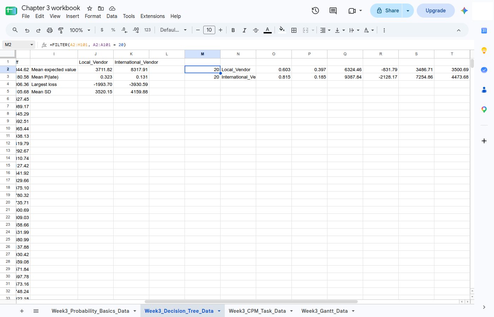
Scenario 20 is in rows 21 (local) and 71 (international). Click an empty cell, such as M2, type =FILTER(A2:H101, A2:A101 = 20) and press Enter. Calc fills two rows of eight cells with the matching records, and shows the formula in braces in the formula bar, because the result is an array. Read the probabilities, the payoffs, the expected values and the standard deviations from the result.
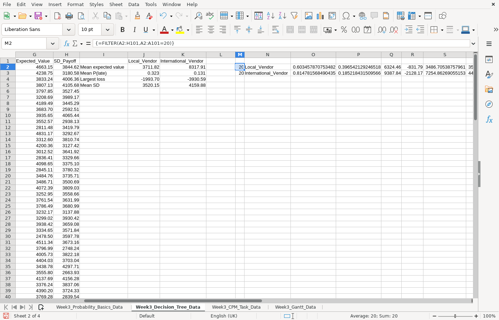
On paper, draw the decision tree for scenario 20 following the four steps in part 2: a square for the choice, a circle for each vendor’s delivery and a triangle for each payoff. Write the expected value next to each circle, roll the tree back and draw a line through the rejected branch. Photograph the drawing for your upload.
Then answer three questions with your partner:
- Which vendor does expected value favour in scenario 20, and by how much?
- What is each vendor’s probability of a loss, and its worst outcome?
- Would you change the choice for a team whose reserves cover a loss of 2,000 USD?
Activity 3: CPA/CPM and Gantt task (40 minutes)
This activity uses the CPM sheet, then the Gantt sheet. The CPM sheet has Task_Name in column B, Predecessors in C and the three estimates in D, E and F.
Step 8. Add the PERT columns
Type T_E in G1 and =(D2 + 4*E2 + F2) / 6 in G2. Type Variance in H1 and =((F2 - D2) / 6)^2 in H2. Extend both formulas down to row 9, then format columns G and H to three decimal places. G2 should read 4.667 and H2 0.444, as in worked example 3.10.
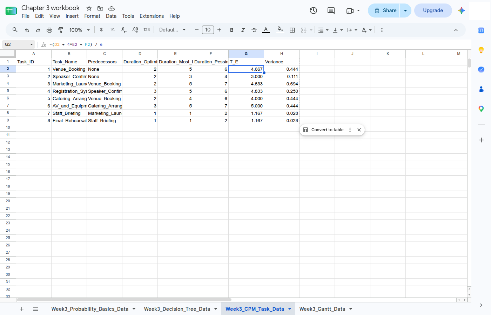
Type T_E in G1 and =(D2 + 4*E2 + F2) / 6 in G2. Type Variance in H1 and =((F2 - D2) / 6)^2 in H2. Select G2:H9 and choose Sheet, then Fill Cells, then Fill Down. Format columns G and H to three decimal places, using Format, then Cells. G2 should read 4.667 and H2 0.444, as in worked example 3.10.
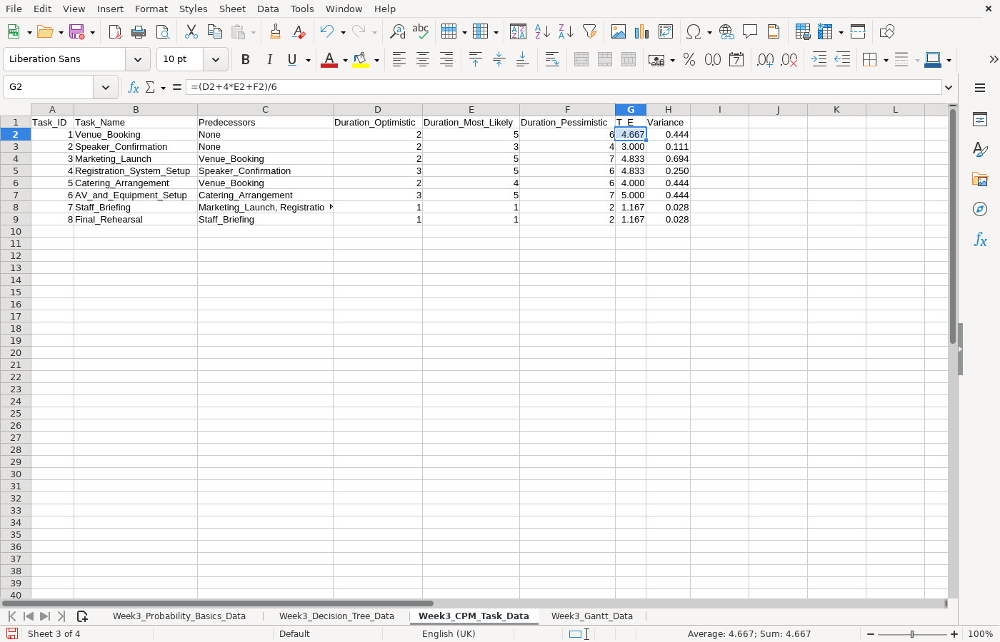
Step 9. Run the forward pass
The forward pass uses the most likely durations in column E. Type the headings ES in I1 and EF in J1, then the formulas in Table 3.28. Each ES references the EF cells of that task’s predecessors, so the formulas differ from row to row.
| Row | Task | ES, column I | EF, column J |
|---|---|---|---|
| 2 | Venue_Booking | 0 |
=I2 + E2 |
| 3 | Speaker_Confirmation | 0 |
=I3 + E3 |
| 4 | Marketing_Launch | =J2 |
=I4 + E4 |
| 5 | Registration_System_Setup | =J3 |
=I5 + E5 |
| 6 | Catering_Arrangement | =J2 |
=I6 + E6 |
| 7 | AV_and_Equipment_Setup | =J6 |
=I7 + E7 |
| 8 | Staff_Briefing | =MAX(J4, J5, J6, J7) |
=I8 + E8 |
| 9 | Final_Rehearsal | =J8 |
=I9 + E9 |
Type each formula into its cell. J9 should read 16, the project’s finishing time. Before proceeding, calculate the ES and EF for Staff_Briefing manually using the four EF values of its predecessors, and verify your answer against I8 and J8.
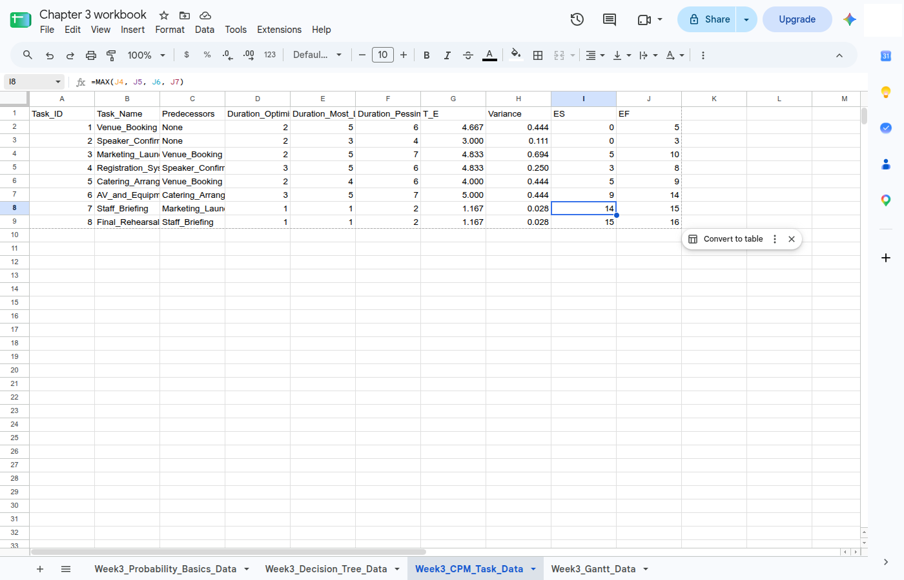
Type each formula into its cell. J9 should read 16, the project’s finishing time. Before proceeding, calculate the ES and EF for Staff_Briefing manually using the four EF values of its predecessors, and verify your answer against I8 and J8.
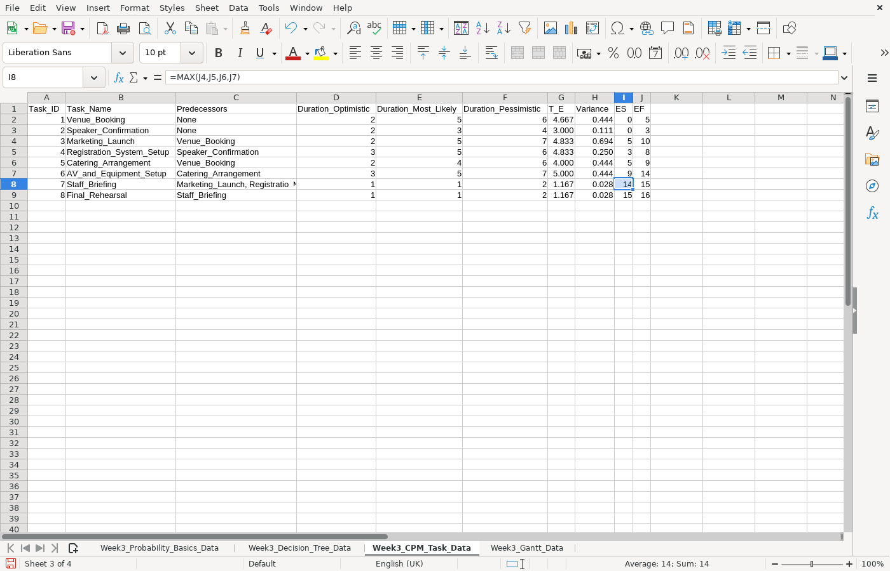
Step 10. Run the backward pass and find the critical path
Type the headings LS in K1, LF in L1 and Slack in M1, then the formulas in Table 3.29. Each LF references the LS cells of that task’s successors.
| Row | Task | LS, column K | LF, column L | Slack, column M |
|---|---|---|---|---|
| 2 | Venue_Booking | =L2 - E2 |
=MIN(K4, K6) |
=K2 - I2 |
| 3 | Speaker_Confirmation | =L3 - E3 |
=K5 |
=K3 - I3 |
| 4 | Marketing_Launch | =L4 - E4 |
=K8 |
=K4 - I4 |
| 5 | Registration_System_Setup | =L5 - E5 |
=K8 |
=K5 - I5 |
| 6 | Catering_Arrangement | =L6 - E6 |
=MIN(K7, K8) |
=K6 - I6 |
| 7 | AV_and_Equipment_Setup | =L7 - E7 |
=K8 |
=K7 - I7 |
| 8 | Staff_Briefing | =L8 - E8 |
=K9 |
=K8 - I8 |
| 9 | Final_Rehearsal | =L9 - E9 |
=J9 |
=K9 - I9 |
Type each formula into its cell. Column M should read 0, 6, 4, 6, 0, 0, 0, 0. Select M2:M9, choose Format, then Conditional formatting and set Format cells if to Is equal to 0, keep the default green fill and click Done to highlight the critical tasks.
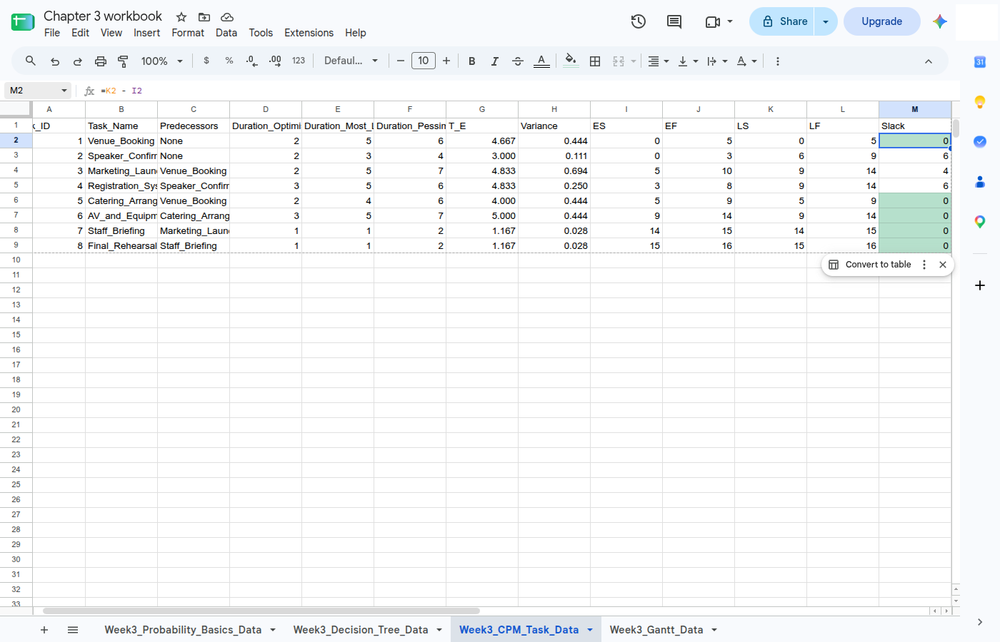
Type each formula into its cell. Column M should read 0, 6, 4, 6, 0, 0, 0, 0. Select M2:M9, choose Format, then Conditional, then Condition. Set the condition to Cell value is, equal to and 0, choose Good under Apply Style and click OK to highlight the critical tasks.
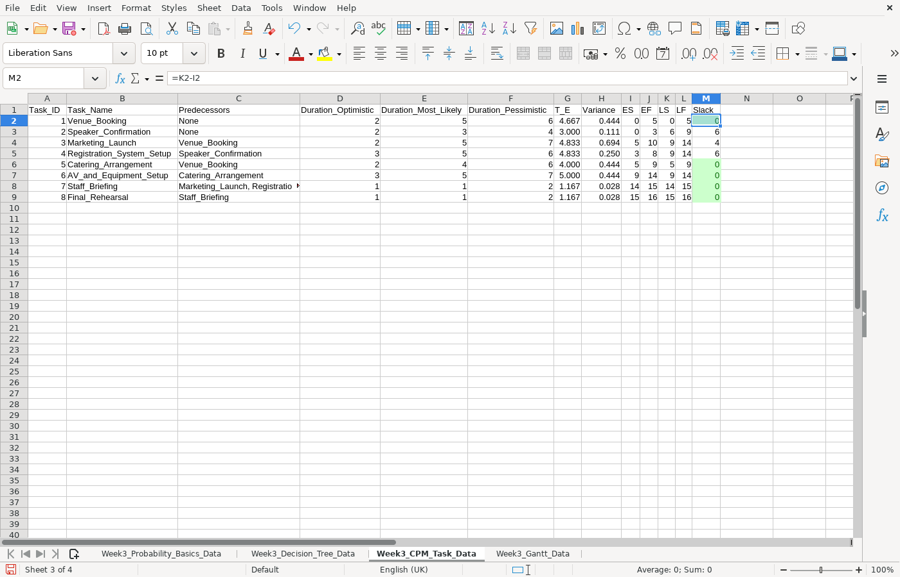
Compare your sheet with Table 3.20 in part 3. Then change every E in columns J and K to G so the passes use the PERT durations. J9 becomes 16.000 and the critical tasks remain unchanged. In an empty cell, add the variances of the five critical tasks with =H2 + H6 + H7 + H8 + H9, which gives 1.389. Revert the formulas to reference column E before step 12.
Step 11. Draw the Gantt chart
Open the Gantt sheet. In I1 type Offset, in I2 type =C2 - 1 and fill down to row 9. Column C is Start_Day, so Offset calculates the number of full days before each task begins.
Select B1:B9, then hold Ctrl and select D1:D9 and I1:I9. Choose Insert, then Chart. In the chart editor, set Chart type to Stacked bar chart. If Duration_Days appears before Offset under Series, remove both and add Offset first. Under Customise, then Series, choose Offset and set Fill opacity to 0%. Add the title Event preparation, days 1 to 16.
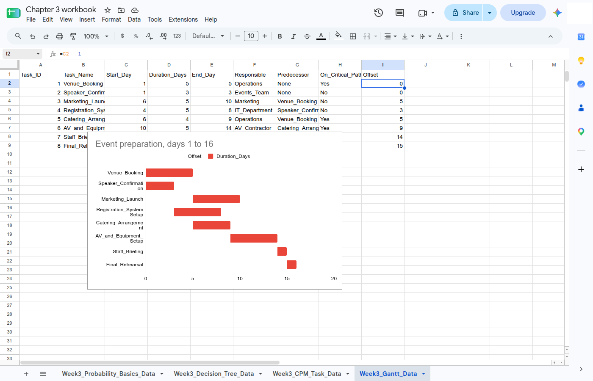
Select B1:B9, then hold Ctrl and select D1:D9 and I1:I9. Choose Insert, then Chart. In the Chart Wizard:
- Under Chart Type, choose Bar and its Stacked variant.
- Under Data Range, keep Data series in columns, First row as label and First column as label ticked.
- Under Data Series, Calc lists
Duration_DaysbeforeOffset, because it orders the series by column. SelectOffsetand click the up arrow, so the offset is stacked first. - Under Chart Elements, type the title
Event preparation, days 1 to 16and click Finish.
With the chart still in edit mode, double-click an Offset bar and set Area to None and the border Style to None. Then double-click the task names, open the Scale tab and tick Reverse direction, so that Venue_Booking appears at the top.
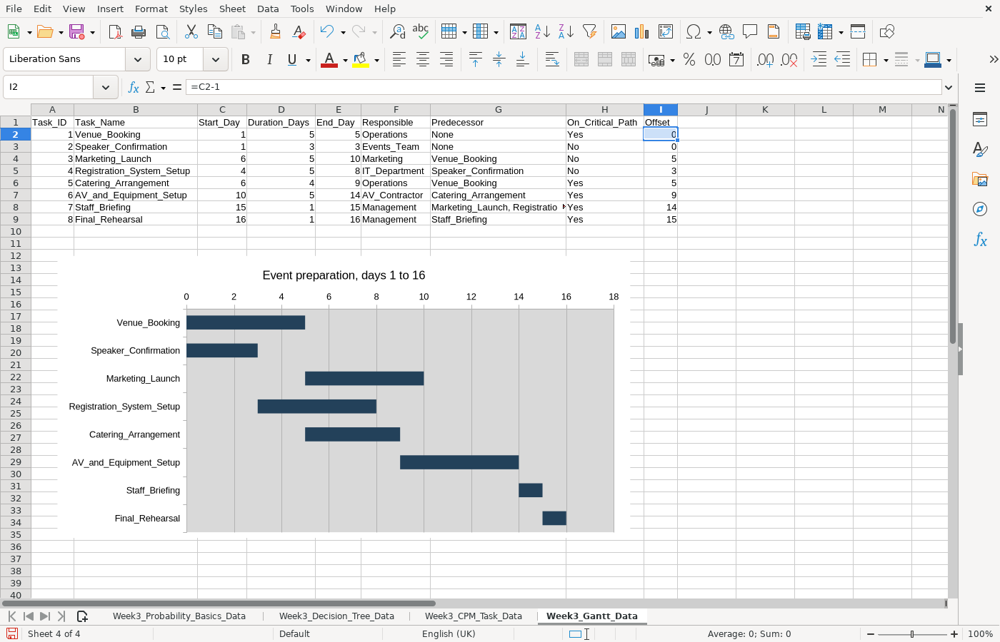
Each bar ends at its End_Day, and the horizontal axis of the chart measures time from 0, consistent with CPM. Compare your chart with Figure 3.5 in part 3. Mark the five critical tasks by colouring their bars differently or adding “(critical)” to their names in column B to ensure the chart remains legible when printed in greyscale.
Step 12. Check the Gantt chart against the critical path
On the Gantt sheet, type CPM start in J1 and, in J2, a formula that adds 1 to the matching ES on the CPM sheet. If the CPM sheet is named Week3_CPM_Task_Data, the formula is ='Week3_CPM_Task_Data'!I2 + 1. Fill down to row 9 and compare column J with Start_Day in column C. Do the same for End_Day against EF.
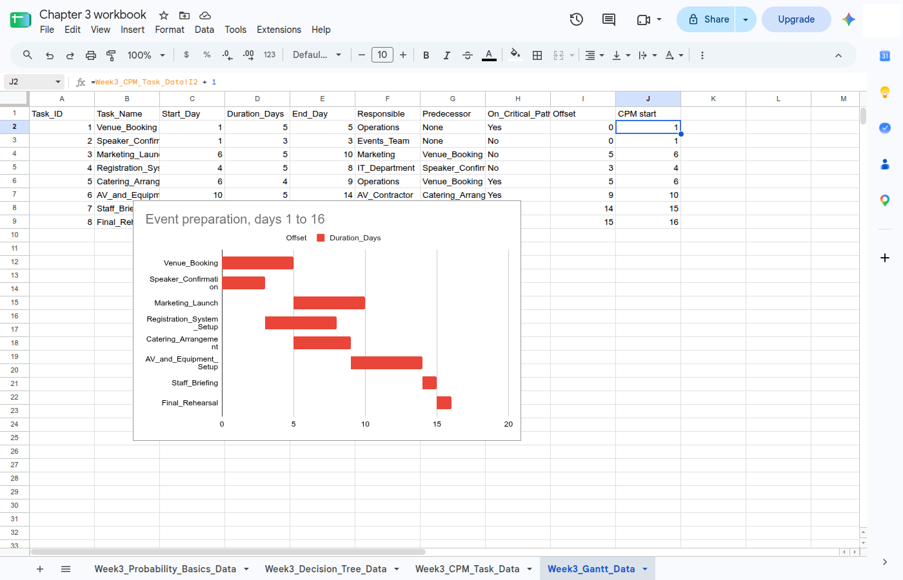
On the Gantt sheet, type CPM start in J1 and, in J2, a formula that adds 1 to the matching ES on the CPM sheet. Calc joins a sheet name to a cell with a full stop, so if the CPM sheet is named Week3_CPM_Task_Data, the formula is =$Week3_CPM_Task_Data.I2 + 1. Fill down to row 9 and compare column J with Start_Day in column C. Do the same for End_Day against EF.
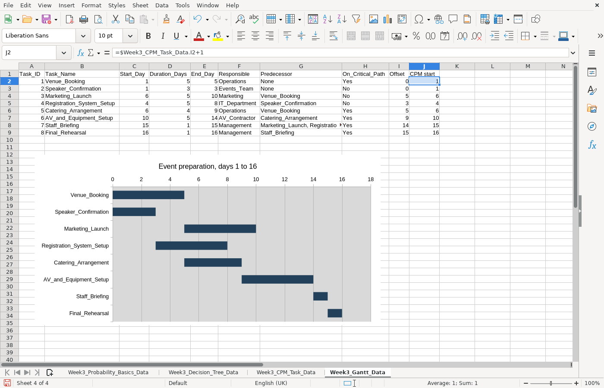
Then answer three questions with your partner, using the five checks in Table 3.21:
- Do all 8 start days match ES + 1, and all 8 end days match EF?
- Do the tasks marked
YesinOn_Critical_Pathmatch the zero-slack tasks from step 10? - Which task is the most likely bottleneck, the critical task with the largest PERT variance or the non-critical task with the largest variance? Explain in one sentence.
Activity 4: Decision note (25 minutes)
The decision note is the single page a manager reads. Write it for the head of the events team, who will read the note and will not consult the workbook.
Step 13. Write the decision note
Add a sheet named Decision note, using the + at the bottom left. Type the note into cell A1. Choose Format, then Wrapping, then Wrap and widen column A so the whole note is visible.
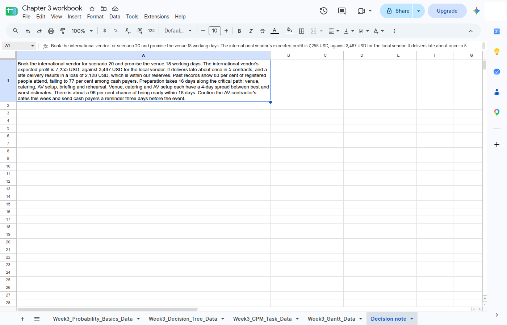
Add a sheet with the + to the left of the sheet tabs, then right-click its tab, choose Rename Sheet and name it Decision note. Type the note into cell A1. Choose Format, then Cells, open the Alignment tab and tick Wrap text automatically, then widen column A so the whole note is visible.
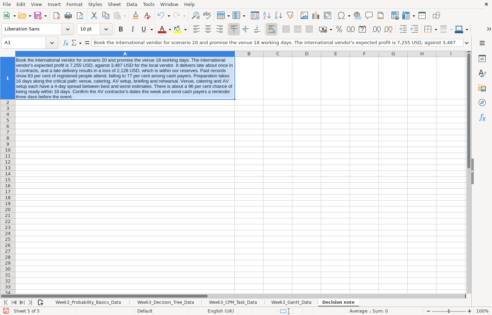
Your note must be no more than 150 words and must address four requirements, following the decision note:
- Open with the recommendation: which vendor for scenario 20, and the date to promise.
- Give one figure from each tool: an attendance probability, the two expected values and the critical path with its length.
- Name the single risk with the greatest potential impact, together with its probability.
- End with an action the team can take and the date for completing it.
What good looks like
Book the international vendor for scenario 20 and promise the venue 18 working days. The international vendor’s expected profit is 7,255 USD, against 3,487 USD for the local vendor. It delivers late about once in 5 contracts, and a late delivery results in a loss of 2,128 USD, which is within our reserves. Past records show 83 per cent of registered people attend, falling to 77 per cent among cash payers. Preparation takes 16 days along the critical path: venue, catering, AV setup, briefing and rehearsal. Venue, catering and AV setup each have a 4-day spread between best and worst estimates. There is about a 96 per cent chance of being ready within 18 days. Confirm the AV contractor’s dates this week and send cash payers a reminder three days before the event.
The example contains 133 words and remains within the 150-word limit. A specific sentence fulfils each of the four requirements:
- “Book the international vendor for scenario 20 and promise the venue 18 working days” opens with both recommendations.
- “The international vendor’s expected profit is 7,255 USD, against 3,487 USD”, “83 per cent of registered people attend” and “16 days along the critical path” give one figure from each tool.
- “a late delivery results in a loss of 2,128 USD” and “about a 96 per cent chance of being ready” name the risks with their probabilities.
- “Confirm the AV contractor’s dates this week and send cash payers a reminder three days before the event” ends with actions and dates.
Every figure in the note comes from the four files. You can locate each one in the workbook you built in activities 1 to 3.